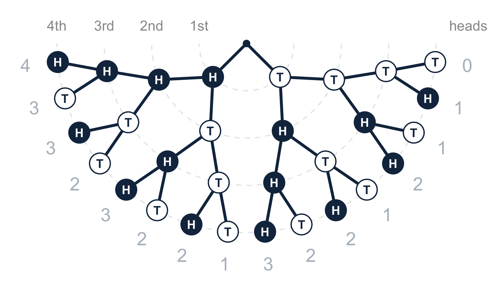
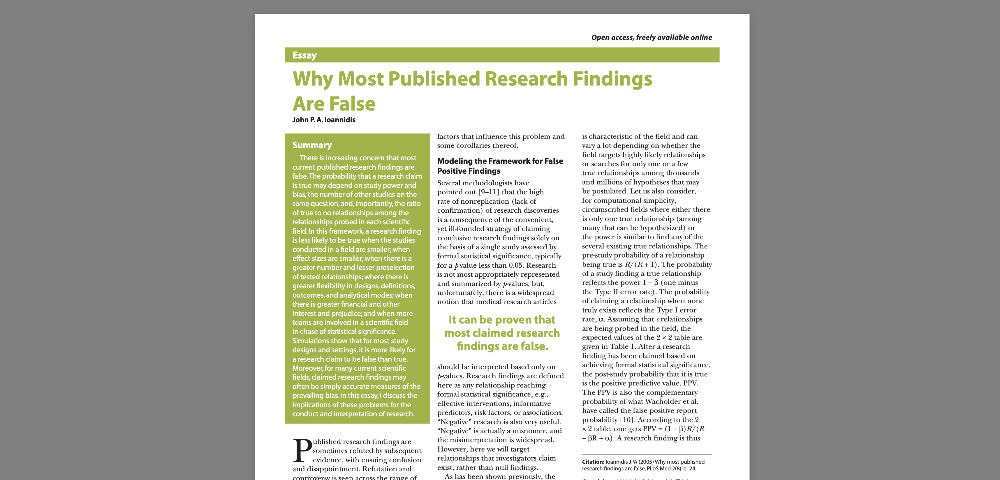
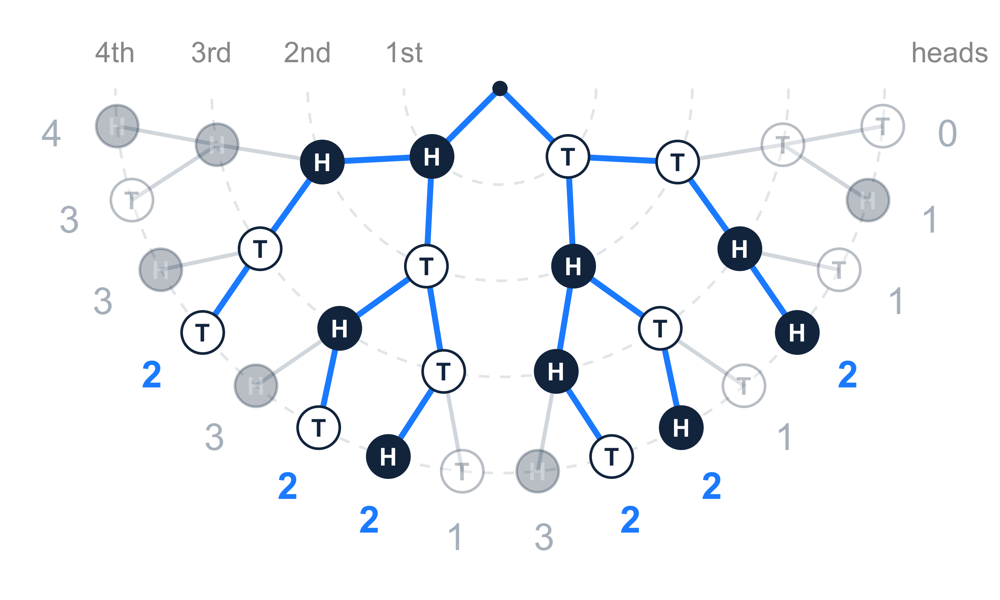
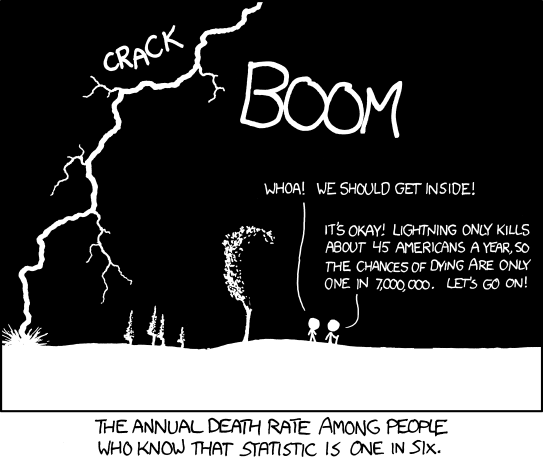
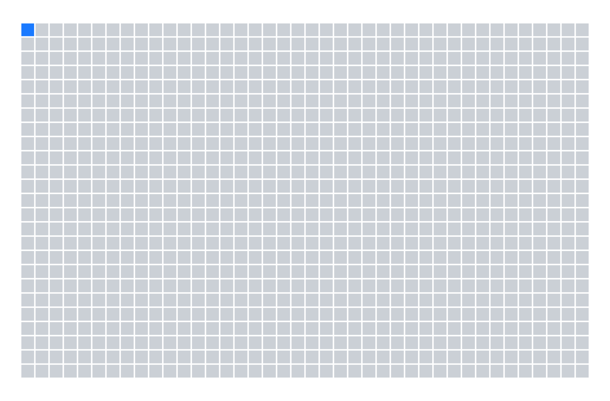
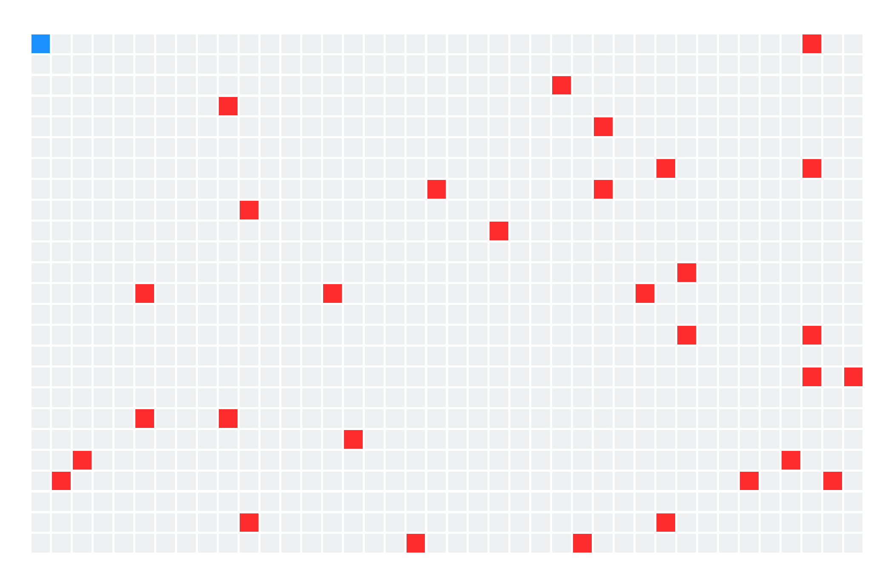
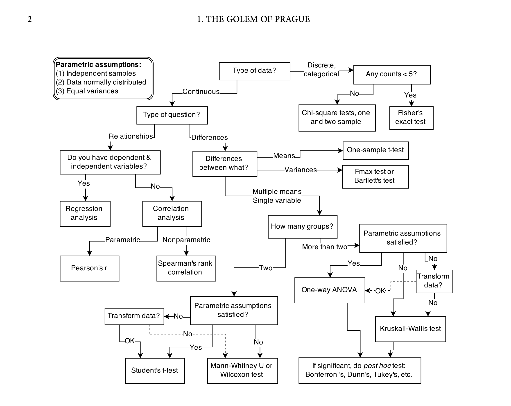
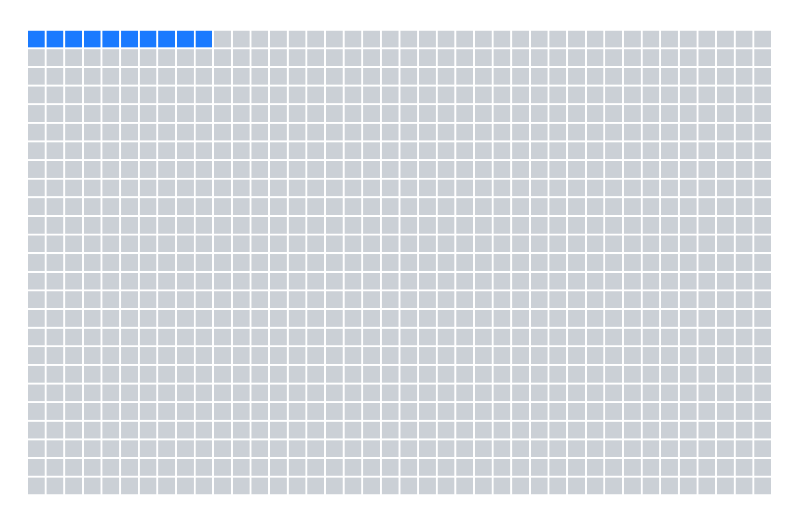
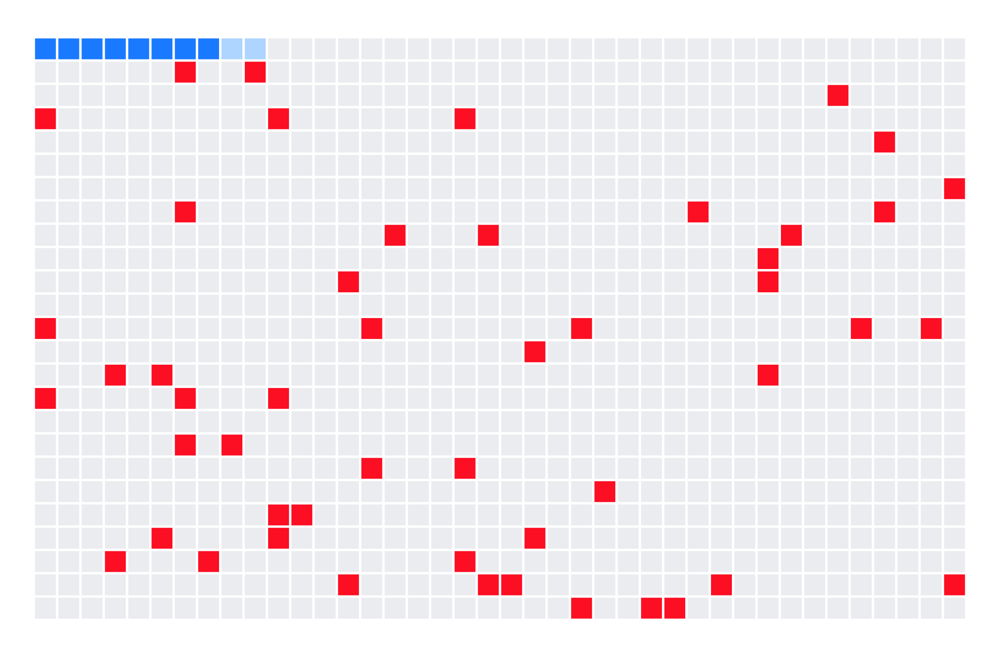
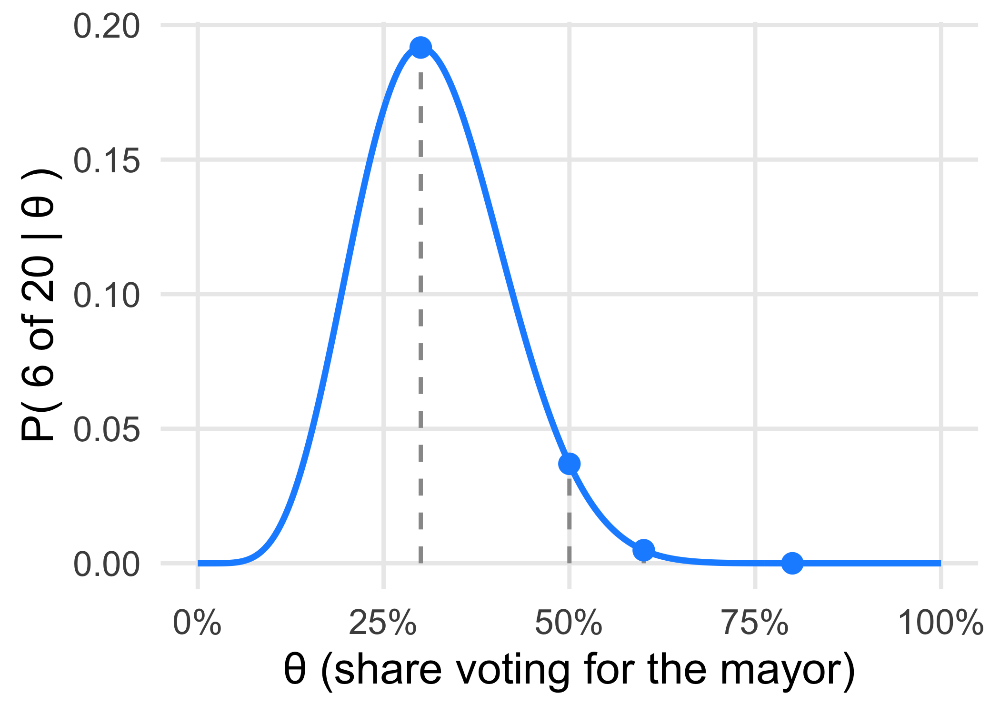

Week 1: All of Statistics in One Formula

https://journals.plos.org/plosmedicine/article?id=10.1371/journal.pmed.0020124…and that’s okay.
A result is statistically significant if, assuming the null hypothesis is true and the model assumptions hold, the probability of obtaining data at least as extreme as those observed (the p-value) is less than or equal to the chosen significance level α. This leads to rejection of the null hypothesis while controlling the long-run Type I error rate at α. (ChatGPT, 2026)
So what is probability?
It’s a way of talking about uncertainty.
But what does “a 31% chance of rain” actually mean?
Count everything that could happen. Count the ones you care about. Compare.
Every analysis we do in this course will come down to counting, exactly like this.
Flip a coin four times. How likely is exactly two heads?


Four events, two possibilities each:
| Heads | 0 | 1 | 2 | 3 | 4 |
|---|---|---|---|---|---|
| Ways | 1 | 4 | 6 | 4 | 1 |
What we’re doing is simple:
We list all the ways the world could be, and count them.
We write a probability as a number between 0 and 1, or as a percentage.
| Number | Percentage | Example |
|---|---|---|
| 0 | 0% | Impossible |
| 0.02 | 2% | Winning the raffle: 10 ÷ 500 |
| 0.17 | 17% | Rolling a six: 1 ÷ 6 |
| 0.31 | 31% | Rain in Kathmandu: 113 ÷ 365 days |
| 0.5 | 50% | A fair coin landing heads: 1 ÷ 2 |
| 1 | 100% | Certain |
To convert between the two, move the decimal point two places to the right or to the left.
We write the probability of an event as P( event ).
| We write | We say | Value |
|---|---|---|
| P( rain tomorrow ) | “the probability of rain tomorrow” | 113 ÷ 365 ≈ 0.31 |
| P( getting heads ) | “the probability of getting heads” | 1 ÷ 2 ≈ 0.5 |
| P( rolling a six ) | “the probability of rolling a six” | 1 ÷ 6 ≈ 0.17 |
| P( winning the raffle ) | “the probability of winning the raffle” | 10 ÷ 500 = 0.02 |
It’s just shorthand. Everything inside the brackets is the thing we’re unsure about.
We make a probability more specific by adding a condition: P( event | condition ). - P( rain | July ) means “the probability of rain, given that it’s July.”
| Rainy days | Days counted | Probability | % | |
|---|---|---|---|---|
| P( rain ) | 565 | 1,825 | 0.31 | (31%) |
| P( rain | Apr ) | 35 | 150 | 0.23 | (23%) |
| P( rain | Dec ) | 5 | 155 | 0.03 | (3%) |
| P( rain | Jul ) | 126 | 155 | 0.81 | (81%) |
| P( rain | Feb ) | 8 | 140 | 0.06 | (6%) |
Can data from the past five years help predict tomorrow? Maybe, maybe not.

xkcd 795, “Conditional Risk,” by Randall Munroe (CC BY-NC 2.5)
Hands up if you had tea this morning.
Every prediction needs assumptions. Interesting predictions need strong assumptions.
In Nepal, HIV has a prevalence of about 0.1%. We can write that as:
With statistical tests and predictions, we talk about two kinds of accuracy:
But there’s something strange here…
What about P( HIV+ | test+)? 3.2%
| (pop: 100,000) | Test+ | Test– |
|---|---|---|
| HIV+ (0.1% = 100) |
P( Test+ | HIV+ ): 99% Sensitivity (True Positive) (99) |
P( Test– | HIV+ ): 1% Type II Error (False Negative) (1) |
| HIV– (99.9% = 99,900) |
P( Test+ | HIV– ): 3% Type I Error (False Positive) (2,997) |
P( Test– | HIV– ): 97% Specificity (True Negative) (96,903) |
Historical figures for older screening tests. Modern tests reach about 99.8% specificity, which still gives P( HIV+ | test+ ) of only about 33%. In practice, a positive screen is always confirmed with further tests, and the people who get tested have a much higher prevalence than 0.1%.
P(A|B) is not the same as P(B|A)
| Sociology | Economics | ||
|---|---|---|---|
| Urban | |||
| Rural | |||
P( Sociology | Rural ) =
P( Rural | Sociology ) =
When something is rare, most positive results are false, even from an accurate test.


1,000 people get tested. Only 1 person has HIV. The test identifies them.
It also flags 30 people who don’t have HIV.
31 positives.
Only 1 is real.
#| standalone: true
# app.R
library(shiny)
library(bslib)
library(networkD3)
library(tibble)
library(munsell) # https://github.com/r-wasm/webr/issues/537
sankeyHeight <- 600
sankeyWidth <- 1000
ui <- page_sidebar(
tags$style(HTML(
"
p, ul { font-size: 90%; }
#sankeyWrap svg,
#sankeyWrap svg * {
filter: none !important;
box-shadow: none !important;
}
.sankey-tooltip {
position: absolute;
pointer-events: none;
z-index: 99999;
opacity: 0;
transition: opacity 80ms linear;
padding: 8px 10px;
border-radius: 6px;
background: rgba(20, 20, 20, 0.92);
color: #fff;
font-size: 12px;
line-height: 1.25;
box-shadow: 0 8px 24px rgba(0,0,0,0.25);
max-width: 280px;
}
.sankey-tooltip .label {
font-weight: 600;
margin-bottom: 2px;
}
.sankey-tooltip .value {
opacity: 0.9;
}
"
)),
sidebar = sidebar(
open = "always",
width = 400,
tags$h2("The Base Rate Paradox"),
p(
"Statistical tests help us evaluate the accuracy of prediction models. We often use tests to identify individuals with certain conditions or characteristics prevalent in our population."
),
tags$div(
tags$div(
"Rate of Prevalence: P( condition+ )",
style = "font-weight: bold;"
),
tags$p(
"Probability that a randomly selected individual has the condition.",
style = "font-style: italic;"
),
sliderInput(
inputId = "prevalence_pct",
label = NULL,
min = 0,
max = 10,
value = 0.1,
step = 0.1,
post = "%"
)
),
tags$hr(style = "margin: 1px 0"),
tags$div(
tags$p(
"Statistical tests are always imperfect. Their accuracy is usually summarized by two conditional rates:"
),
tags$div(
"Sensitivity: P( test+ | condition+ )",
style = "font-weight: bold;"
),
tags$p(
"Probability of a positive test among those with the condition (true positive rate)",
style = "font-style: italic;"
),
sliderInput(
inputId = "sensitivity_pct",
label = NULL,
min = 0,
max = 100,
value = 99,
step = 1,
post = "%"
),
tags$div(
"Specificity: P( test– | condition– )",
style = "font-weight: bold;"
),
tags$p(
"Probability of a negative test among those without the condition (true negative rate)",
style = "font-style: italic;"
),
sliderInput(
inputId = "specificity_pct",
label = NULL,
min = 0,
max = 100,
value = 97,
step = 1,
post = "%"
)
)
),
mainPanel(
width = 12,
tags$p(
"Sensitivity and specificity are important, but they can be misleading. They don't tell the whole story.",
tags$br(),
"Often, the kind of accuracy we are actually interested in understanding has the opposite conditional dependency."
),
tags$div(
tags$div(
tags$div(
"Positive Predictive Value: P( condition+ | test+ )",
style = "font-weight: bold;"
),
tags$p(
"Probability of a condition among those with a positive test",
style = "font-style: italic; margin-bottom: 0;"
)
),
tags$div(
textOutput("ppv_text"),
style = "font-size: 200%; font-weight: bold;"
),
style = "display: flex; gap: 40px; align-items: end;"
),
tags$hr(),
sankeyNetworkOutput(
"sankey",
width = paste0(sankeyWidth, "px"),
height = paste0(sankeyHeight, "px")
)
)
)
server <- function(input, output, session) {
ppv_reactive <- reactive({
prevalence <- input$prevalence_pct / 100
sensitivity <- input$sensitivity_pct / 100
specificity <- input$specificity_pct / 100
tp <- prevalence * sensitivity
fp <- (1 - prevalence) * (1 - specificity)
if ((tp + fp) == 0) NA_real_ else tp / (tp + fp)
})
nodes_reactive <- reactive({
tibble(
id = 0:6,
name = c(
"Population",
"Condition Present",
"Condition Absent",
"True Positive",
"False Positive",
"True Negative",
"False Negative"
),
group = c(
"population",
"present",
"absent",
"true",
"false",
"true",
"false"
)
) |>
as.data.frame()
})
links_reactive <- reactive({
population <- 100000
prevalence <- as.numeric(input$prevalence_pct) / 100
sensitivity <- as.numeric(input$sensitivity_pct) / 100
specificity <- as.numeric(input$specificity_pct) / 100
links <- tribble(
~source , ~target , ~value , ~title ,
0 , 1 , population * prevalence , "Condition Present" ,
0 , 2 , population * (1 - prevalence) , "Condition Absent" ,
2 , 5 , population * (1 - prevalence) * specificity , "True Negative" ,
1 , 6 , population * prevalence * (1 - sensitivity) , "False Negative" ,
1 , 3 , population * prevalence * sensitivity , "True Positive" ,
2 , 4 , population * (1 - prevalence) * (1 - specificity) , "False Positive"
) |>
as.data.frame()
# LinkGroup: inherit the source node's group -> links match/blend with node colors
node_groups <- nodes_reactive()$group
links$group <- node_groups[links$source + 1]
links
})
output$ppv_text <- renderText({
ppv <- ppv_reactive()
if (is.na(ppv)) "Undefined" else sprintf("%.2f%%", 100 * ppv)
})
output$sankey <- renderSankeyNetwork({
sankeyNetwork(
Links = links_reactive(),
Nodes = nodes_reactive(),
Source = "source",
Target = "target",
Value = "value",
NodeID = "name",
NodeGroup = "group",
# ---- link colors: CRAN networkD3 supports LinkGroup (not linkColourMode) ----
LinkGroup = "group",
fontSize = 14,
nodeWidth = 30,
iterations = 0,
margin = list(top = 5, right = 0, bottom = 5, left = 5),
sinksRight = TRUE,
# Use semi-transparent RGBA so links blend nicely with nodes
# (Nodes remain effectively opaque because they're solid rect fills)
colourScale = JS(
'd3.scaleOrdinal()
.domain(["population", "absent", "present", "true", "false"])
.range([
"#2f6088ff", // population
"#a5c5e2ff", // absent
"#468ec9ff", // present (slightly stronger)
"#3E5915", // true
"#A60F37" // false
])'
),
height = sankeyHeight,
width = sankeyWidth
) |>
htmlwidgets::onRender(
"
function(el) {
// remove native SVG tooltips
d3.select(el).selectAll('title').remove();
var fmt = d3.format(',.0f');
// tooltip div (one per widget)
var tipId = 'sankey-tooltip-' + el.id;
d3.select('body').select('#' + tipId).remove();
var tip = d3.select('body')
.append('div')
.attr('id', tipId)
.attr('class', 'sankey-tooltip')
.style('position', 'absolute')
.style('pointer-events', 'none')
.style('z-index', 99999)
.style('opacity', 0)
.style('padding', '8px 10px')
.style('border-radius', '6px')
.style('background', 'rgba(20,20,20,0.92)')
.style('color', '#fff')
.style('font-size', '12px')
.style('line-height', '1.25')
.style('box-shadow', '0 8px 24px rgba(0,0,0,0.25)');
function moveTip() {
var e = d3.event;
tip.style('left', (e.pageX + 12) + 'px')
.style('top', (e.pageY + 12) + 'px');
}
function showTip(label, value) {
tip.html(
'<div style=\"font-weight:600;\">' + label + '</div>' +
'<div>' + fmt(value) + '</div>'
).style('opacity', 1);
moveTip();
}
function hideTip() {
tip.style('opacity', 0);
}
// LINKS: Source -> Target + value
d3.select(el).selectAll('path.link')
.style('stroke-opacity', 0.55) // optional: strengthen link visibility
.on('mouseover.tooltip', function(d) {
showTip(d.source.name + ' \\u2192 ' + d.target.name, d.value);
})
.on('mousemove.tooltip', moveTip)
.on('mouseout.tooltip', hideTip);
// NODES: Name + value
d3.select(el).selectAll('.node rect')
.on('mouseover.tooltip', function(d) {
showTip(d.name, d.value);
})
.on('mousemove.tooltip', moveTip)
.on('mouseout.tooltip', hideTip);
}
"
)
})
}
shinyApp(ui, server)Let’s look at that quote again:
A result is statistically significant if, assuming the null hypothesis is true and the model assumptions hold, the probability of obtaining data at least as extreme as those observed (the p-value) is less than or equal to the chosen significance level α. This leads to rejection of the null hypothesis while controlling the long-run Type I error rate at α.
Two key phrases:
This frames statistical significance as:
Not the same as (what we usually actually want):
If statistics has ever made you feel dumb or intimidated, it’s not you. P-value imagines the world in a very strange way.
| Starts from | Asks | |
|---|---|---|
| How we observe | what we saw | “What does this tell me about the world?” |
| A p-value | an imagined world with nothing going on | “How surprising would my data be there?” |
We want a different kind of statistics to work the same way knowledge does: we start with assumptions, we encounter new data, and we update our beliefs about the world.

Statistical Rethinking, p.2 (Richard McElreath, 2020)
Instead of a flowchart of tests, one rule for all of statistics:
Prior × Likelihood → Posterior
Example: will the mayor win?
That’s it. A poll, a regression, a causal model: everything in this course is just this one rule, applied again and again.
#| standalone: true
library(shiny)
library(bslib)
library(shinyjs)
library(ggplot2)
library(ggiraph)
library(htmlwidgets)
library(munsell) # https://github.com/r-wasm/webr/issues/537
TOTAL_STONES <- 9L
CONJECTURE <- vapply(
0:TOTAL_STONES,
function(x) paste0(strrep("🔵", x), strrep("⚫️", TOTAL_STONES - x)),
character(1)
)
SHIFT_HANDLER <- HTML(
"
document.addEventListener('keydown', function(e) {
if (e.key === 'Shift') {
const btn = document.getElementById('drawRandom');
if (btn) btn.innerText = 'Random × 10';
}
});
document.addEventListener('keyup', function(e) {
if (e.key === 'Shift') {
const btn = document.getElementById('drawRandom');
if (btn) btn.innerText = 'Random';
}
});
"
)
STYLE <- HTML(
"
h1 { margin-bottom: 0; }
p { font-size: 90%; }
#resultTable.shiny-output-error,
#resultTable.shiny-output-error-validation { color: inherit; }
#resultTable table {
width: 100%;
table-layout: fixed;
}
#resultTable th:nth-child(1),
#resultTable td:nth-child(1) { width: 220px; }
#resultTable th:nth-child(3),
#resultTable td:nth-child(3) { width: 160px; direction: rtl }
#resultTable th:nth-child(4),
#resultTable td:nth-child(4) { width: 80px; }
/* --- Stop Shiny from dimming the table while recalculating --- */
/* Shiny uses .recalculating (not always .shiny-recalculating) */
#resultTable.recalculating,
#resultTable.shiny-recalculating {
opacity: 1 !important;
}
/* If opacity is applied in a way that affects children, force children too */
#resultTable.recalculating *,
#resultTable.shiny-recalculating * {
opacity: 1 !important;
}
/* Shiny adds a spinner/overlay via pseudo-elements */
#resultTable.recalculating:before,
#resultTable.recalculating:after,
#resultTable.shiny-recalculating:before,
#resultTable.shiny-recalculating:after {
display: none !important;
content: none !important;
}
/* ---- full-height main panel + plot fills remaining space ---- */
html, body { height: 100%; }
.bslib-page-sidebar { height: 100vh; }
.bslib-page-sidebar .main {
height: 100%;
display: flex;
flex-direction: column;
min-height: 0;
}
#probabilityPlot_wrap {
flex: 1 1 auto;
min-height: 0;
width: 100%;
}
/* Ensure the htmlwidget + ggiraph wrappers and SVG fill the wrapper */
#probabilityPlot_wrap .html-widget,
#probabilityPlot_wrap .girafe_container,
#probabilityPlot_wrap svg {
width: 100% !important;
height: 100% !important;
}
"
)
format2 <- function(x, max_digits = 40L) {
x_chr_fixed <- format(
x,
scientific = FALSE,
trim = TRUE,
digits = 22
)
digit_count <- nchar(gsub("[^0-9]", "", x_chr_fixed))
ifelse(
is.na(x),
NA_character_,
ifelse(
digit_count > max_digits,
format(x, scientific = TRUE, trim = TRUE),
x_chr_fixed
)
)
}
format_probability <- function(x) {
if (is.na(x) || !is.finite(x)) {
return("")
}
if (x > 0 && x < 0.01) {
return("<0.01")
}
if (x < 1 && x > 0.995) {
return(">0.99")
}
sprintf("%.2f", x)
}
ui <- page_sidebar(
tags$script(SHIFT_HANDLER),
tags$style(STYLE),
shinyjs::useShinyjs(),
sidebar = sidebar(
open = "always",
width = 400,
h2("Bayesian Updating"),
p(
"Imagine you have a bag of 9 stones. Each stone is either blue or black, but you don't know how many of each color you have."
),
p(
"You can draw stones from the bag one at a time, noting down its color and then placing it back in the bag. The more you repeat this process, the more you can infer about the contents of the bag."
),
p(
"This graph represents a",
tags$b("probability distribution", .noWS = c("after")),
". From limited observations, we can never be absolutely certain of the contents of the bag, but we can say that some possibilities are more likely than others."
),
div(
id = "bagContents_wrap",
selectizeInput(
"bagContents",
"Contents of the bag:",
choices = c(
"Hidden" = "hidden",
"⚫️⚫️⚫️⚫️⚫️⚫️⚫️⚫️⚫️" = 0,
"🔵⚫️⚫️⚫️⚫️⚫️⚫️⚫️⚫️" = 1,
"🔵🔵⚫️⚫️⚫️⚫️⚫️⚫️⚫️" = 2,
"🔵🔵🔵⚫️⚫️⚫️⚫️⚫️⚫️" = 3,
"🔵🔵🔵🔵⚫️⚫️⚫️⚫️⚫️" = 4,
"🔵🔵🔵🔵🔵⚫️⚫️⚫️⚫️" = 5,
"🔵🔵🔵🔵🔵🔵⚫️⚫️⚫️" = 6,
"🔵🔵🔵🔵🔵🔵🔵⚫️⚫️" = 7,
"🔵🔵🔵🔵🔵🔵🔵🔵⚫️" = 8,
"🔵🔵🔵🔵🔵🔵🔵🔵🔵" = 9
)
)
),
div("Draw a stone:"),
div(
style = "display: flex; gap: 10px;",
actionButton("drawWhite", "⚫️"),
actionButton("drawBlue", "🔵"),
actionButton(
"drawRandom",
"Random",
style = "flex: 1;",
onclick = "
Shiny.setInputValue(
'drawRandom_n',
event.shiftKey ? 10 : 1,
{priority: 'event'}
);
"
)
),
actionButton("reset", "Reset", class = "btn-danger")
),
mainPanel(
width = 12,
uiOutput("dynamicHeader"),
tableOutput("resultTable"),
div(
id = "probabilityPlot_wrap",
ggiraph::girafeOutput("probabilityPlot")
)
)
)
server <- function(input, output, session) {
# webR/shinylive starts every session with the same fixed RNG seed, so the
# first sample() would otherwise be deterministic. Seed from sub-second wall
# clock to get fresh randomness per page load.
set.seed(as.integer((as.numeric(Sys.time()) * 1000) %% .Machine$integer.max))
bag_blue <- reactiveVal(NULL)
draws <- reactiveVal(character())
lik_hist <- reactiveVal(list())
max_hist <- 10L
observeEvent(
input$bagContents,
{
if (input$bagContents == "hidden") {
bag_blue(sample(0:TOTAL_STONES, 1))
} else {
bag_blue(as.integer(input$bagContents))
}
},
ignoreInit = FALSE
)
observeEvent(input$drawBlue, draws(c(draws(), "🔵")))
observeEvent(input$drawWhite, draws(c(draws(), "⚫️")))
observeEvent(
input$drawRandom_n,
{
req(!is.null(bag_blue()))
n_draws <- as.integer(input$drawRandom_n)
pool <- c(rep("🔵", bag_blue()), rep("⚫️", TOTAL_STONES - bag_blue()))
draws(c(draws(), sample(pool, n_draws, replace = TRUE)))
},
ignoreInit = TRUE
)
observeEvent(input$reset, {
draws(character())
lik_hist(list())
# bag_blue(sample(0:TOTAL_STONES, 1))
updateSelectizeInput(session, "bagContents", selected = "hidden")
})
observe({
has_draws <- length(draws()) > 0
if (has_draws) {
shinyjs::disable("bagContents")
shinyjs::enable("reset")
} else {
shinyjs::enable("bagContents")
shinyjs::disable("reset")
}
})
observe({
req(!is.null(bag_blue()))
tip <- sprintf("blue stones = %d (out of %d)", bag_blue(), TOTAL_STONES)
shinyjs::runjs(sprintf(
"$('#bagContents_wrap .selectize-control').attr('title', %s);",
shQuote(tip)
))
})
table_state <- reactive({
d <- draws()
n <- length(d)
header <- if (n == 0) {
"Draw Results"
} else if (n <= 20) {
paste(d, collapse = "\u00A0")
} else {
tbl <- sort(table(d), decreasing = TRUE)
labels <- paste(names(tbl), "×", as.integer(tbl))
paste(labels, collapse = ", ")
}
if (n == 0) {
df <- data.frame(
conjecture = CONJECTURE,
possibilities = "-",
total = "-",
probability = rep(1 / (TOTAL_STONES + 1), TOTAL_STONES + 1),
stringsAsFactors = FALSE
)
return(list(df = df, header = header))
}
factors <- lapply(
0:TOTAL_STONES,
function(bx) ifelse(d == "🔵", bx, TOTAL_STONES - bx)
)
formula <- vapply(
factors,
function(f) {
if (n <= 20) {
paste0(f, collapse = " × ")
} else {
tbl <- sort(table(f), decreasing = TRUE)
labels <- paste0(names(tbl), "<sup>", as.integer(tbl), "</sup>")
paste(labels, collapse = " × ")
}
},
character(1)
)
log_paths <- vapply(factors, function(f) sum(log(f)), numeric(1))
m <- max(log_paths)
paths_scaled <- exp(log_paths - m)
probability <- paths_scaled / sum(paths_scaled)
paths <- vapply(factors, prod, numeric(1))
df <- data.frame(
conjecture = CONJECTURE,
possibilities = formula,
total = format2(round(paths, 0)),
probability = probability,
stringsAsFactors = FALSE
)
list(df = df, header = header)
})
output$dynamicHeader <- renderUI({
h4(HTML(sprintf(
"<span style='letter-spacing:0.15em;'>%s</span>",
table_state()$header
)))
})
output$resultTable <- renderTable(
{
df <- table_state()$df
df$probability <- vapply(df$probability, format_probability, character(1))
df
},
striped = TRUE,
hover = TRUE,
bordered = FALSE,
spacing = "s",
rownames = FALSE,
width = "100%",
align = "llrr",
sanitize.text.function = function(x) x
)
probability_vector <- reactive(table_state()$df$probability)
observeEvent(
probability_vector(),
{
y <- probability_vector()
h <- lik_hist()
if (length(h) == 0 || !isTRUE(all.equal(h[[length(h)]], y))) {
h <- c(h, list(y))
if (length(h) > max_hist) {
h <- tail(h, max_hist)
}
lik_hist(h)
}
},
ignoreInit = TRUE
)
make_plot_data <- function(df, h) {
x <- 0:TOTAL_STONES
cur <- data.frame(
x = x,
y = df$probability,
conjecture = df$conjecture,
stringsAsFactors = FALSE
)
ghost_df <- NULL
if (length(h) > 1) {
ghosts <- h[-length(h)]
n_ghosts <- length(ghosts)
gray_vals_full <- as.integer(round(seq(240, 120, length.out = max_hist)))
gray_vals <- tail(gray_vals_full, n_ghosts)
ghost_cols <- rgb(gray_vals, gray_vals, gray_vals, maxColorValue = 255)
ghost_df <- do.call(
rbind,
lapply(seq_along(ghosts), function(i) {
data.frame(
step = i,
x = x,
y = ghosts[[i]],
col = ghost_cols[i],
stringsAsFactors = FALSE
)
})
)
}
list(cur = cur, ghost = ghost_df)
}
output$probabilityPlot <- ggiraph::renderGirafe({
df <- table_state()$df
h <- lik_hist()
pd <- make_plot_data(df, h)
cur <- pd$cur
ghost <- pd$ghost
cur$point_id <- paste0("curpt-", cur$x)
# Tooltip changes:
# - emoji line first (conjecture)
# - probability formatted like the table
cur$tooltip <- sprintf(
"%s\nBlue stones: %d\nprobability: %s",
cur$conjecture,
cur$x,
vapply(cur$y, format_probability, character(1))
)
p <- ggplot()
# ghosts
if (!is.null(ghost) && nrow(ghost) > 0) {
p <- p +
geom_line(
data = ghost,
aes(x = x, y = y, group = step, color = col),
linewidth = 0.7
) +
scale_color_identity()
}
# current: points only (line is drawn + animated in JS)
p <- p +
ggiraph::geom_point_interactive(
data = cur,
aes(x = x, y = y, tooltip = tooltip, data_id = point_id),
size = 2.6,
color = "black"
) +
scale_x_continuous(breaks = 0:TOTAL_STONES, limits = c(0, TOTAL_STONES)) +
scale_y_continuous(
limits = c(-0.05, 1.05),
expand = expansion(mult = c(0, 0.02))
) +
labs(x = "Number of blue stones", y = "probability") +
theme_minimal(base_size = 13) +
theme(panel.grid.minor = element_blank(), legend.position = "none")
g <- ggiraph::girafe(
ggobj = p,
width_svg = 12,
height_svg = 4,
options = list(
ggiraph::opts_sizing(rescale = FALSE),
ggiraph::opts_hover(css = "fill:black; r:5px;"),
ggiraph::opts_tooltip(
css = "background-color: white; border: 1px solid #999; padding: 6px; border-radius: 4px;"
)
)
)
g$x$step <- length(draws())
htmlwidgets::onRender(
g,
"
function(el, x) {
var svg = el.querySelector('svg');
if (!svg) return;
// Let SVG stretch to match the available rectangle
svg.setAttribute('preserveAspectRatio', 'none');
svg.setAttribute('width', '100%');
svg.setAttribute('height', '100%');
// Hide immediately to prevent flash of new final coordinates
svg.style.visibility = 'hidden';
var step = x.step;
function getPoints() {
var pts = Array.prototype.slice.call(svg.querySelectorAll('[data-id^=\"curpt-\"]'));
var arr = pts.map(function(pt) {
var id = pt.getAttribute('data-id');
var idx = parseInt(id.replace('curpt-', ''), 10);
return {
id: id,
idx: idx,
el: pt,
cx: parseFloat(pt.getAttribute('cx')),
cy: parseFloat(pt.getAttribute('cy'))
};
}).filter(function(d) {
return isFinite(d.idx) && isFinite(d.cx) && isFinite(d.cy);
});
arr.sort(function(a,b){ return a.idx - b.idx; });
return arr;
}
function ensureLine() {
var line = svg.querySelector('#curline-js');
if (!line) {
line = document.createElementNS('http://www.w3.org/2000/svg', 'path');
line.setAttribute('id', 'curline-js');
line.setAttribute('fill', 'none');
line.setAttribute('stroke', 'black');
line.setAttribute('stroke-width', '2.2');
line.setAttribute('stroke-linecap', 'round');
line.setAttribute('stroke-linejoin', 'round');
svg.appendChild(line);
}
return line;
}
function pathFromXY(xy) {
if (!xy || xy.length === 0) return '';
var d = 'M ' + xy[0].cx + ' ' + xy[0].cy;
for (var i=1; i<xy.length; i++) d += ' L ' + xy[i].cx + ' ' + xy[i].cy;
return d;
}
function ease(u) {
return u < 0.5 ? 4*u*u*u : 1 - Math.pow(-2*u + 2, 3)/2;
}
function setToPts(ptsArr, pts, line) {
for (var i=0; i<ptsArr.length; i++) {
ptsArr[i].el.setAttribute('cx', pts[i].cx);
ptsArr[i].el.setAttribute('cy', pts[i].cy);
ptsArr[i].el.removeAttribute('transform');
}
line.setAttribute('d', pathFromXY(pts));
}
// More responsive feel:
// - shorter debounce before starting animation
// - slightly shorter duration
var DEBOUNCE_MS = 55; // was 100
var DURATION_MS = 360; // was 450
function animateFromTo(ptsArr, startPts, endPts, line, durationMs, onDone) {
if (el.__animCancel) el.__animCancel();
var t0 = null;
var cancelled = false;
el.__animCancel = function(){ cancelled = true; };
el.__animating = true;
el.__animTargetPts = endPts;
// Put at start before showing
setToPts(ptsArr, startPts, line);
// Show once start state is in place
svg.style.visibility = 'visible';
ptsArr.forEach(function(d){ d.el.style.pointerEvents = 'none'; });
function frame(ts) {
if (cancelled) return;
if (t0 === null) t0 = ts;
var u = Math.min(1, (ts - t0) / durationMs);
var e = ease(u);
var interp = new Array(endPts.length);
for (var i=0; i<endPts.length; i++) {
var a = startPts[i], b = endPts[i];
interp[i] = {
cx: a.cx + (b.cx - a.cx) * e,
cy: a.cy + (b.cy - a.cy) * e
};
}
el.__curLinePts = interp;
for (var j=0; j<ptsArr.length; j++) {
ptsArr[j].el.setAttribute('cx', interp[j].cx);
ptsArr[j].el.setAttribute('cy', interp[j].cy);
}
line.setAttribute('d', pathFromXY(interp));
if (u < 1) {
requestAnimationFrame(frame);
} else {
setToPts(ptsArr, endPts, line);
ptsArr.forEach(function(d){ d.el.style.pointerEvents = ''; });
el.__animating = false;
el.__animCancel = null;
el.__curLinePts = endPts;
if (typeof onDone === 'function') onDone();
}
}
requestAnimationFrame(frame);
}
function finishAnimationNow(ptsArr, line) {
if (el.__animating && el.__animTargetPts && el.__prevLinePts) {
if (el.__animCancel) el.__animCancel();
setToPts(ptsArr, el.__animTargetPts, line);
ptsArr.forEach(function(d){ d.el.style.pointerEvents = ''; });
el.__animating = false;
el.__animCancel = null;
el.__prevLinePts = el.__animTargetPts;
el.__curLinePts = el.__animTargetPts;
}
}
// Read new rendered final positions (but hidden)
var ptsArr = getPoints();
var nextPts = ptsArr.map(function(d){ return { cx: d.cx, cy: d.cy }; });
var line = ensureLine();
// First render: snap and show
if (el.__lastStep === undefined || el.__prevLinePts === undefined) {
el.__lastStep = step;
el.__prevLinePts = nextPts;
el.__curLinePts = nextPts;
setToPts(ptsArr, nextPts, line);
svg.style.visibility = 'visible';
return;
}
// No new draw: keep synced and show
if (step === el.__lastStep) {
el.__prevLinePts = nextPts;
el.__curLinePts = nextPts;
setToPts(ptsArr, nextPts, line);
svg.style.visibility = 'visible';
return;
}
// Defensive: mismatch => snap and show
if (el.__prevLinePts.length !== nextPts.length || nextPts.length === 0) {
el.__lastStep = step;
el.__prevLinePts = nextPts;
el.__curLinePts = nextPts;
setToPts(ptsArr, nextPts, line);
svg.style.visibility = 'visible';
return;
}
// Coalesce rapid updates
finishAnimationNow(ptsArr, line);
el.__pendingStep = step;
el.__pendingNextPts = nextPts;
if (el.__debounceTimer) clearTimeout(el.__debounceTimer);
el.__debounceTimer = setTimeout(function() {
if (!el.__pendingNextPts) return;
var targetPts = el.__pendingNextPts;
var targetStep = el.__pendingStep;
el.__pendingNextPts = null;
el.__pendingStep = null;
var startPts = el.__prevLinePts;
animateFromTo(ptsArr, startPts, targetPts, line, DURATION_MS, function() {
el.__lastStep = targetStep;
el.__prevLinePts = targetPts;
el.__curLinePts = targetPts;
});
}, DEBOUNCE_MS);
// While we wait for debounce, show the baseline (current) state, not the new final state
setToPts(ptsArr, el.__prevLinePts, line);
svg.style.visibility = 'visible';
}
"
)
})
}
shinyApp(ui, server)The one rule, written as a formula.
\[ P(A \mid B) = \frac{P(B \mid A) \times P(A)}{P(B)} \]
\[ \class{green}{P(\text{belief} \mid \text{data})} = \frac{ \class{blue}{P(\text{data} \mid \text{belief})} \;\times\; \class{red}{P(\text{belief})} }{ \class{gray}{P(\text{data})} } \]
Conceptually: Prior × Likelihood → Posterior
It’s the HIV test again.


1,000 ideas get tested. Most are wrong: only 10 are true.
Good studies find 8 of the true ones.
They also “find” 50 false ones, by chance.
58 discoveries.
Only 8 are real.
α: the chance of a “significant” result when the idea is false · β: the chance of missing an idea that’s true
| Type of study | True ideas | α | β | Chance a “discovery” is true |
|---|---|---|---|---|
| Large trial of a promising idea | 50% | 5% | 20% | 94% |
| Small study of a promising idea | 50% | 5% | 80% | 80% |
| Search for new effects (the 1,000 ideas) | 1% | 5% | 20% | 14% |
| Small search for new effects | 1% | 5% | 80% | 4% |
| p-hacked small study | 10% | 20% | 80% | 10% |
What matters most is how many of the ideas we test are true to begin with.
Most studies are wrong. …and that’s okay.
What makes science work isn’t experiments or observations.
It’s groups of scientists arguing about how to fit many observations together, observations that often contradict each other.
Science isn’t the experiments we do.
It’s the debates we have about them.
“Ethnography is subjective. Statistics is objective. It’s hard data.”
| Observation | Interpretation assumes… | |
|---|---|---|
| Ethnography | interviews, field notes | what people meant; whose voices stand for others |
| Statistics | surveys, measurements, records | what causes what; how the data were generated |
Both join an objective part, the observation, with a subjective part, the assumptions. The difference isn’t the field. It’s whether the assumptions are stated openly, where others can challenge them.
The math is the least interesting part.
The science comes first.
Assume, look, update. Repeat.
The science always comes first.
That’s what we’re going to do here: put the science first.
Every week starts with the question and what we believe about the world. The statistics come after.
Appendix: we’ll work through this together with the TA in our second class.
Let’s walk through the simplest possible version of this workflow.
A deliberately simple model
Each respondent is like a coin flip that comes up “mayor” with probability θ. No weighting, no turnout, no non-response, no post-stratification. We’ll add those later.
\[ \begin{aligned} k &\sim \text{Binomial}(n,\ \theta) && \class{blue}{\text{likelihood}} \\ \theta &\sim \text{your prior} && \class{red}{\text{prior}} \end{aligned} \]
Before seeing any survey, what do you believe about θ? Drag the points.
We survey 20 voters. 6 of them (30%) say they will vote for the mayor.

How consistent is “6 of 20” with each possible value of θ?
The likelihood is not a belief. It’s what the coin-flip process in the world says about our data, one candidate value of θ at a time.
| Prior | Posterior | |
|---|---|---|
| Best guess | ||
| 90% range | ||
| P( mayor wins ) |
What is the result, and how much does it depend on our assumptions? This is that question, in miniature.